For the Picocomputer RP6502
COSMIC ARC II
Alpha Ro Cluster
The Ark's ancient mission is over. Now the black market begins.
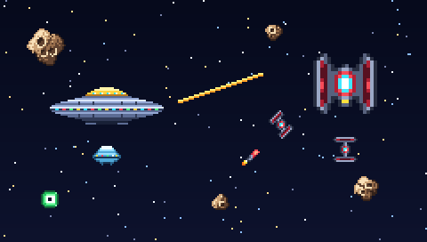
Contents
- The Story: After the Ark3
- Getting Started & Save Slots4
- Gamepad & Keyboard Controls5
- The Galaxy & Sector View6
- Star Chart & Close-Up Circuit7
- Starports: Trade & Banking8
- Starports: Bio-Bounty & Shipyard9
- Deep Space: The Screen & HUD10
- Deep Space: Ark & Fighter11
- Deep Space Threats & Escape Pod12
- Planetary Extraction: The HUD13
- Planetary Extraction: Shuttle & Beam14
- Worlds, Defenses & Meteor Storms15
- Exotic Wildlife & The Relic16
- Achievements17
- Smuggler's Strategy Guide18
- Captain's Log19
Continuous Auto-Save: Your voyage automatically saves to your chosen slot whenever you warp, clear deep space, leave a planet, or transact at a Starport.
2
After the Ark
Generations ago, the legendary Cosmic Ark completed its desperate rescue across the dying star systems of the old frontier. Its sacred purpose fulfilled, the ancient starship was powered down, stripped of its beacons, and sealed inside a forgotten asteroid vault at the rim of the Alpha Ro Cluster.
It was supposed to rest there forever.
Then you found it.
A rogue black-market salvager with more nerve than scruples, you cracked the vault, hotwired the Ark's warp core, and fired up its legendary tractor beam. In a galaxy where eccentric collectors, off-world menageries, and frontier barons pay fortunes for rare alien fauna, the Ark isn't a museum piece—it's the ultimate poaching rig.
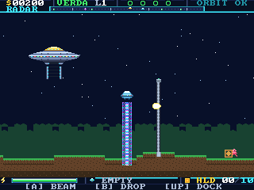
The Ark's shuttle locking its tractor beam onto surface specimens on Verda.
Chart 64 seeded sectors, raid uncharted worlds for exotic creatures and ore, outrun Syndicate TIE-Fighter pirates, trade across 11 Starports, and hunt down the rumored Outer-Rim Relic. Build your fortune—or assemble a complete pair of every known species in the Ark's manifest.
3
Getting Started
Load RP_CosmicArc_II.rp6502 on your Picocomputer RP6502 (or launch the browser edition) with a USB gamepad or keyboard attached. The animated title screen appears with OPL2 FM music.
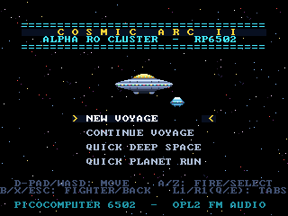
The Title Screen.
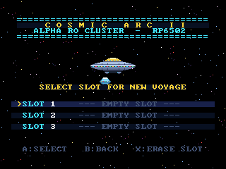
The 3-Slot Save Picker.
Title Menu Options
- New Voyage — Pick one of 3 save slots to generate a brand-new seeded 64-sector galaxy and begin at Sector 01 with $200 and 100 Energy.
- Continue Voyage — Resume any saved campaign from its last auto-save point.
- Quick Deep Space — Jump straight into endless escalating waves of asteroids and pirates.
- Quick Planet Run — Practice planetary extraction on Verda with zero voyage risk.
Save Slots: Each slot displays your current Sector, Stardate, Credits, and Achievements. Press X (or C / Del) for a safe 2-step Erase confirmation before wiping a slot.
4
Controls
Cosmic Arc II is designed for a full RP6502 USB Gamepad, with complete keyboard equivalents for every button.
Menus, Galaxy & Starports
D-Pad / WASD
Move cursor, highlight actions, or navigate Star Chart grid. In Starports, Left / Right also switches tabs.
A · Z / Enter
Confirm / Select — Dock, Land, Warp (including direct warp on Star Chart), Buy/Sell, Upgrade.
B · X / Esc
Back / Cancel / Undock — Always returns to Sector View, leaves a Starport, or cancels prompts.
X / Y · C / K
Secondary Action — Keep a specimen for the Ark Manifest (Bio-Bounty) or Erase Save Slot.
L1 / R1 · Q / E
Prev / Next Page — Flip smoothly left & right across Voyage tabs and Starport tabs (Tab also advances).
START · P
Prompt to save and return to the Title Screen from Sector View.
Deep Space & Planetary Surface
D-Pad / WASD
Space: Aim Ark 8-way laser, or fly the Fighter Saucer.
Planet: Launch shuttle (Down), fly across terrain, dock (Up or Up+Left/Right), or aim storm cannon.
A · Z / Space
Space: Fire Ark laser / Fighter blasters.
Planet: Hold to fire Tractor Beam (or fire storm cannon while docked).
B / X · X / C
Space: Launch or Recall the Fighter Saucer.
Planet: Drop carried cargo, or Hold while docked to leave planet early.
5
The Galaxy & Sector View
The Alpha Ro Cluster is a seeded network of 64 interconnected sectors arranged on a 12×8 grid. Every New Voyage builds a fresh layout divided into four risk tiers:
| Tier | Sectors | Ambush Odds | Notes |
|---|
| Safe Space | 01–10 | 0% | Home zone; Starports include the Bank |
| Core | 11–15 | 30% | Rich trading & moderate pirate patrols |
| Mid-Rim | 16–40 | 45% | Higher bounties & tougher worlds |
| Outer Rim | 41–64 | 60% | Deadly raids & home of the Relic |
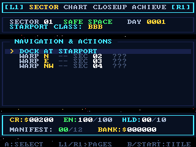
Sector View showing the shared [L1]/[R1] Voyage tab bar, current sector details, warp links, and ship status.
- Voyage Tab Bar: Press L1 / R1 (
Q / E) at any time to flip between Sector, Chart, Close-Up, and Achieve.
- Two-Way vs. One-Way Warps: Standard warps show
-- SEC. Five rare one-way warps show a red -> SEC—make sure you have another route home!
- Nebula Sectors: Add +25% pirate ambush risk when entering.
6
Star Chart & Close-Up
Press R1 (E) from Sector View to open the 4bpp Graphical Galactic Star Chart, showing every visited sector and every unexplored sensor contact adjacent to your path. Press R1 again to zoom into the 5×5 Close-Up Sector Circuit.
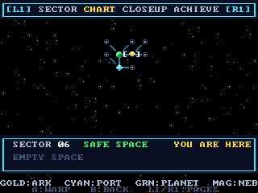
4bpp Star Chart. Press A on an adjacent node to warp directly!
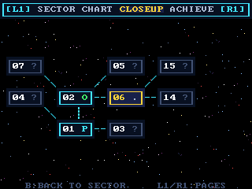
5×5 Close-Up Circuit showing every warp lane to unvisited ? zones.
Star Chart Icon Legend
Gold Ship: Your Ark
Cyan Diamond: Starport (P)
Green Globe: Planet (O)
Magenta Cloud: Nebula (#)
Grey Dot: Visited Empty (.)
Dark Ring: Unvisited (?)
Direct Chart Warp: On the Star Chart, move the white targeting brackets onto any adjacent reachable sector until [A] WARP appears in the inspect panel, then press A to jump straight there. Press B anytime to return to Sector View.
7
Starports: Trade & Bank
Eleven Starports are scattered across the cluster. Each port has a 3-letter Class Code (such as BBS or SSB) telling you whether it Buys or Sells each of the three commodities: Fuel Ore, Organics, and Equipment.
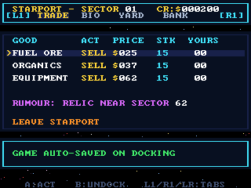
Trade Tab & Relic Rumours.
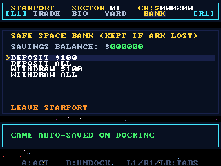
Safe-Space Bank (Sectors 01–10).
- Dynamic Supply & Demand: Buy low at high-stock Seller ports (
SELL), then sell high at Buyer ports (BUY). Prices rise as stock shrinks and fall as a port fills up. Ports gradually restock every few warps.
- Switch Tabs: Use L1 / R1 or Left / Right to move smoothly across Trade, Bio, Yard, and Bank. Press B (
X / Esc) anytime to undock.
- Safe-Space Bank: Available at Starports in Sectors 01–10. Deposit credits in $100 increments or all at once—banked savings survive even if the Ark is destroyed!
8
Bio-Bounty & Shipyard
Every creature you abduct from a planet is stored in your cargo holds (Stasis). At any Starport's Bio tab, choose between instant profit or long-term collection:
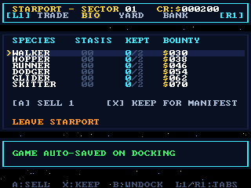
Bio-Bounty & Manifest (0/2).
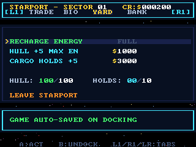
Shipyard Recharge & Upgrades.
- Press A (Sell 1): Cash in a specimen immediately. Outer-Rim ports pay much higher bounties than Safe Space, though flooding one port causes temporary market glut.
- Press X (Keep for Manifest): Permanently transfer a specimen into the Ark's Manifest (up to 2/2 of each species) to earn the PAIRS and SURVEY achievements!
The Shipyard (Yard Tab)
- Recharge Energy: Top off your Ark's energy core (cheaper in Safe Space, pricier in the Outer Rim).
- Hull +5 Max EN ($1,000+): Permanently expand your maximum Energy up to 200.
- Cargo Holds +5 ($3,000 / $6,000): Expand capacity from 10 → 15 → 20 holds.
9
Deep Space: The Screen
Warping into Core, Mid-Rim, or Outer-Rim space—or departing a hostile world—can trigger a Deep Space Encounter. Survive the asteroid field and any Syndicate pirate ambush to reach your destination.
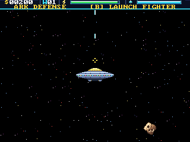
The Cosmic Ark holding center space with its 8-way point-defense targeting reticle.
1
2
3
4
1
Credits ($): Your current cash aboard the Ark. Destroying asteroids, pirates, and catching salvage pods pays directly into your account.
2
Wave (W01–W10): Encounter threat level, scaled by how far you are from Safe Space.
3
Ark Energy Bar: Both your shield integrity and laser fuel! Turns gold below 50% and flashing red below 25%. If it reaches 0, the Ark is lost.
4
Fighter Tether Bar: Remaining operational charge for the Fighter Saucer (or REBUILDING if destroyed).
10
Ark & Fighter Combat
Ark Point-Defense Mode
While the Fighter Saucer is docked, the D-pad aims the Ark's 8-way point-defense reticle and A fires high-speed energy bolts. Each shot costs 1 Energy, and every asteroid or pirate kill refunds Energy—accurate marksmanship keeps your core topped up!
Large asteroids split into two Medium rocks, and Medium rocks split into two Small fragments. Clear incoming lanes before rocks slam into the Ark's hull.
Launching the Fighter Saucer
Press B (X) at any time to deploy the nimble Fighter Saucer! While the Fighter is out:
- You pilot the Fighter freely in 8 directions and fire rapid twin blasters with A.
- The Ark's automated defense turret takes over, independently shooting nearby asteroids and pirates!
- The Fighter draws from its cyan Tether Bar. Press B again to recall it early so it recharges safely inside the Ark's bay.
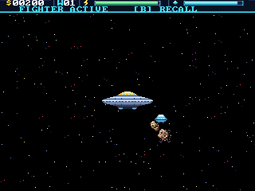
The Fighter Saucer engaging asteroids while the Ark defends center space.
Tip: If the Fighter is destroyed, the Ark automatically fabricates a replacement after a short cooldown—you don't lose the Ark unless the Ark's own Energy hits zero.
11
Deep Space Threats
Asteroids (L / M / S) 16 / 12 / 8 DMG
Tumbling space boulders that approach along 8 arrival lanes. Large rocks split into Mediums, and Mediums into Smalls. Shoot them early before they crowd the hull.
TIE-Fighter Raider +$12 Bounty
Fast twin-wing Syndicate interceptors that weave around asteroids, orbit the Ark, and strafe with plasma bolts. Launch the Fighter to hunt them down fast.
Pirate Heavy Gunship +$30 Bounty
Armored twin-wing command cruiser appearing from Wave 2 onward. Absorbs heavy fire and launches homing Seeker Missiles from standoff range.
Seeker Missile 12 DMG
Tracked warheads fired by Gunships. Intercept them with laser fire before impact!
Salvage Pod +$16 & Energy
Glowing emerald canisters dropped by destroyed pirates. Fly your Fighter through them to scoop bonus credits and recharge!
Escape Pod: If the Ark's Energy hits 0, you eject in the Escape Pod and limp back to Sector 01. You lose unbanked credits and cargo, but your Bank savings, Ship Upgrades, and Map progress survive!
12
Planetary Extraction: HUD
When you land at a Planet sector, the Ark drops into low orbit above a seamless, wrapping 1024-pixel surface guarded by automated defense towers.
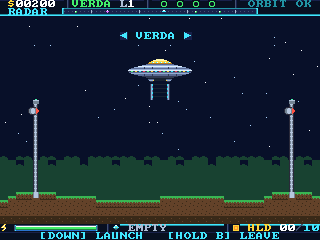
The Ark descending into orbit above Verda with its docking tunnel extended.
1
2
3
4
1
Credits & Radar Label: Cash on hand and the 24-cell Planetary Radar below.
2
World & Level: Planet biome name and threat level (L1–L5).
3
Specimen Icons: Remaining surface creatures (dim) vs. captured (bright green).
4
Orbit Status: ORBIT OK during calm skies, or flashing STORM!! during meteor alerts.
5
6
7
5
Ark Energy Bar: Shared power reserve for orbit defense and shuttle ops.
6
Shuttle Bay Status: Currently carried creature, Ore Crate, Relic, or EMPTY.
7
Cargo Holds (HLD): Used / Maximum hold capacity across all goods and stasis pods.
13
Shuttle & Tractor Beam
- Launch: While docked inside the Ark, press Down to descend through the docking tunnel into the planet's atmosphere.
- Track via Radar: The 24-cell Planetary Radar in the top HUD shows the entire wrapping world at a glance—Green dots are wildlife, Magenta is the Relic, Gold is the Ark, Cyan is your Shuttle, and Grey ticks are Defense Towers.
- Tractor Beam: Hover above a creature, Ore Crate, or Relic and hold A (
Z / Space) to project the full-altitude tractor beam straight down to the ground.
- Beam Struggle: Caught creatures thrash and pull sideways! Steer with the D-pad to keep them centered inside the beam until they lock into your bay.
- Dock & Deliver: Fly back under the Ark's glowing tunnel and press Up (or diagonal Up+Left / Up+Right) to dock and secure your haul.
Projecting the tractor beam while dodging a sweeping tower defense turret on Verda.
Early Departure: Want to leave before the storm hits or after grabbing a Relic? Dock safely inside the Ark and hold B (X) while skies are calm to break orbit! Press B while flying to drop unwanted cargo.
14
Worlds, Defenses & Storms
Six Planetary Biomes
Each habitable sector features one of six distinct alien worlds—VERDA (emerald jungle), RUBRA (crimson volcanic), GLACI (frozen ice), UMBRA (violet twilight), ARENA (golden desert), and TOXIS (acid swamp)—at danger levels L1 to L5.
Planets gradually repopulate every 3 warp turns after you clear them, so lucrative hunting grounds can be revisited later in your voyage.
Automated Tower Defenses
Four tall Laser Towers ring every planet. Their mounted guns sweep up and down the shafts, periodically charging and firing a screen-wide horizontal energy pulse. Watch the bright warning flash on the tower gun, then duck above or below its altitude before the beam fires!
The 45-Second Meteor Storm
Every 45 seconds in orbit, planetary sensors blare STORM!! and meteors rain down toward the Ark:
- Recall Immediately: Race back up the docking tunnel! If the shuttle is caught outside when the storm peaks, it risks destruction.
- Defend the Ark: Once docked during a storm, use Up / Left / Right and A to fire the Ark's 3-way orbital defense cannon and shatter incoming meteors.
- Shooting down 5 storm rocks across your voyage earns the STORMS achievement!
Shuttle Lost: If your shuttle is hit by a tower pulse or meteor, any carried specimen is lost and the Ark takes time to rebuild a replacement shuttle.
15
Wildlife & The Relic
Six exotic alien species inhabit the Alpha Ro Cluster. Higher-level worlds spawn rarer, faster, and more lucrative specimens—each with its own evasion instincts when your shuttle approaches:
WALKERSteady surface grazer. Base bounty $30+. Ideal starter catch.
HOPPERSprings into erratic leaps when spooked by the beam. Base $38+.
RUNNERSprints away from your shuttle shadow at high speed. Base $46+.
DODGERJukes and reverses direction mid-beam. Lead your aim! Base $54+.
GLIDERSoars in mid-air above the terrain. Intercept from above. Base $62+.
SKITTERDarting Outer-Rim speedster—hardest catch, highest pay! Base $70+.
Surface Cargo & The Outer-Rim Relic
Surface Ore Crate +1 Fuel Ore
Abandoned mining crates scattered across planets. Beam them aboard for free Fuel Ore to sell at Buyer Starports.
The Outer-Rim Relic +$2,000 Reward
A priceless ancient artifact hidden on one Outer-Rim planet (Starport Trade tabs whisper rumours of its sector). Deliver it to any Starport for a massive $2,000 payout!
16
Achievements
Flip to the ACHIEVE tab with L1 / R1 to track your 16 career milestones. Unlocked badges light up in color and persist in your save slot.
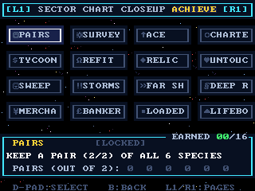
| Badge | Requirement | Badge | Requirement |
|---|
| PAIRS | Keep 2/2 of all 6 species | SWEEP | Clear planet, 0 shuttles lost |
| SURVEY | Keep 1 of each by Day 150 | STORMS | Shoot 5 storm meteors |
| ACE | Destroy 50 space pirates | FAR SHORE | Reach Sector 64 |
| CHARTED | Visit all 64 sectors | DEEP RAID | Survive a Wave-10 raid |
| TYCOON | Carry $10,000 aboard Ark | MERCHANT | Sell 50 commodity units |
| REFIT | Max Hull (200) & Holds (20) | BANKER | Save $5,000 in the Bank |
| RELIC | Deliver Outer-Rim Relic | LOADED | Fill all 20 holds at once |
| UNTOUCHED | Clear encounter, 0 hits | LIFEBOAT | Survive via Escape Pod |
17
Smuggler's Strategy Guide
- Bank Early, Bank Often: Before venturing into the Mid-Rim or Outer Rim, deposit surplus credits at a Safe-Space Starport (Sectors 01–10). If a Wave-10 pirate ambush forces you into the Escape Pod, your Bank balance stays untouched!
- Upgrade Hull First: Expanding your Ark's Max Energy at the Shipyard gives you a wider safety margin in both space combat and meteor storms, and lets you fire freely without running dry.
- Use the Fighter Against Pirates: The Ark's fixed 8-way laser excels at asteroids, but TIE-Fighter Raiders and Gunships orbit outside your lanes. Pop out the Fighter with B, let the Ark's auto-turret cover your back, and scoop every green Salvage Pod!
- Ride the Commodity Spreads: Pair a Seller port (
S) with a nearby Buyer port (B) for Equipment or Organics to finance your Hold expansions (10 → 15 → 20) early.
- Hunt the Relic Rumours: Check the purple rumour line on any Starport Trade screen—it narrows down which Outer-Rim sector hides the $2,000 Relic.
- Master the Beam Struggle: High-tier creatures (Dodger, Skitter) try to yank free sideways. Anticipate their juke and nudge the shuttle gently in the same direction to keep them centered.
- Watch One-Way Warps: On the Sector View, red
-> links cannot be reversed. Always inspect your escape routes on the Close-Up Sector Circuit before jumping deep!
Manifest Tip: Remember to press X (not A!) on the Bio-Bounty screen when you want to Keep a specimen for your 2/2 Ark Manifest instead of selling it!
18
Captain's Log
Record profitable Starport trade loops, Relic sightings, and favorite hunting worlds:
19
Cosmic Arc II
The Ark was built to save the galaxy. You found a more profitable use for it.
- 64-Sector Seeded Galaxy with 4bpp Star Chart & Close-Up Circuit
- Deep Space Combat against Asteroids, TIE-Fighter Raiders & Heavy Gunships
- 6 Alien Biomes & 6 Reactive Species with 24-cell Planetary Radar & Meteor Storms
- 11 Dynamic Starports with Commodities, Bio-Bounty, Shipyard & Safe-Space Bank
- 3-Slot Continuous Auto-Save, 16 Achievements & 5 OPL2 FM Music Tracks
COSMIC ARC II: ALPHA RO CLUSTER
Built for the Picocomputer RP6502 (W65C02S · 320×240 4bpp VGA · OPL2 FM Audio).
Inspired by Rob Fulop's classic 1982 Cosmic Ark.